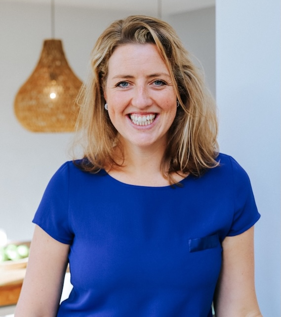

Wie zijn wij?
Als jong gepassioneerde diëtiste gaat ze jou helpen begrijpen hoe voeding impact heeft op je lichaam en je sportprestatie. Lisa gelooft dat de juiste voeding de sleutel is tot een gezonder en sterker leven. Naast haar drukke werkleven haalt ze veel voldoening uit hardlopen, krachttraining en samen met haar kinderen zijn. Samen met haar co-host Marc de Fries gaan ze ook de diepte in over sport. Met Marc zijn ervaring als sportfysioloog weet hij alles over sport en hoe het lichaam daarop reageert, ideaal voor een podcast die alles te maken heeft over sport en voeding. Naast zijn werk vindt hij het leuk om te voetballen, koken en lezen.
